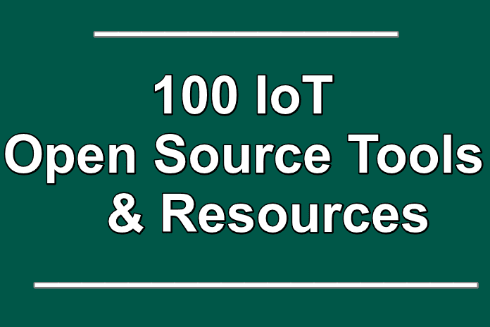

100 IoT Open Source Tools And Resources
By Userx -January 14,2016
Internet of things is raging with an unprecedented speed. Before we tell you about the Internet of Things (IoT) open source development tools there is something else you should know first. With IT sector cashing on the hype created by the predictions from likes of Gartner and Cisco that claim that by the end of 2020 more than 50 billion devices will be connected by IoT, all of a sudden everyone wants to be the part of Internet of Things. Well it is no wonder that you are also looking forward to be part of soon to be a $1.9 trillion industry.
KEVIN ASHTON-“THE INTERNET OF THINGS HAS THE POTENTIAL TO CHANGE THE WORLD, JUST AS THE INTERNET DID. MAYBE EVEN MORE SO.
Since the first concept of “Internet of Things” coined by Kevin Ashton in 1999, the actual definition of internet of things has gone through many changes. Still in simple words IoT can be termed as the environment where physical devices are connected with each other via internet and collect and exchange data for smart response. This is a highly intelligent M2M or Machine-to-Machine technology which has potential to revolutionize how we live and work.
Big players in field of information technology and internet are already working and innovating in the field of IoT one way or the other. ARM concluded in one of its surveys that more than 75% of enterprises already have put their steps into this domain while the mark is expected to reach 96% by the end of 2016.
“IF WE HAD COMPUTERS THAT KNEW EVERYTHING THERE WAS TO KNOW ABOUT THINGS—USING DATA THEY GATHERED WITHOUT ANY HELP FROM US—WE WOULD BE ABLE TO TRACK AND COUNT EVERYTHING, AND GREATLY REDUCE WASTE, LOSS AND COST. WE WOULD KNOW WHEN THINGS NEEDED REPLACING, REPAIRING OR RECALLING, AND WHETHER THEY WERE FRESH OR PAST THEIR BEST.”- KEVIN ASHTON
Why Internet of Things Open Source Development Tools is so popular?
Reasons for the popularity of the IoT open source development tools are the community of users. This community wants to have the open market for utilizing consumer technology devices and not to be dominated by a single vendor. Another reason of going open source is to provide an ecosystem where the IoT devices and applications developed can be integrated without hassles and many efforts. Finally going open source means your device or application can support numerous vendors as you will not be developing code for any specific vendor.
Internet of Things (IoT) open source development tools are mostly developed by the open source community which had worked from early on in the IoT domain. You can deploy the IoT applications making use of these tools sooner than ever before. If you are beginning to build your first internet of things application then this open source tool guide is exclusively for you.
Here we list 100 most widely used and reliable open source tools for developing IoT apps. We have tried our best to include IoT hardware platforms, development tools, software, integrations tools, operating systems and monitoring tools.
Anyhow if you are aware of any tools that are relevant in this context not listed here, please feel free to mention them in the comments below.
IoT Development Tools
- ThingBox
- M2MLabs Mainspring
- Arduino
- Node-RED
- Kinoma
- Eclipse IoT Project
IoT Hardware Platforms
Most important part of developing any IoT application is to choose the right hardware platform. Getting started with simple platform like Arduino Yun to progressing to UDOO it is all about the resource requirement of an application. Here are the best IoT Hardware Platforms to choose from
- Apio
- Arduino Nano
- Arduino Pro Mini
- Arduino Uno
- Arduino Yún
- Arietta G25
- BeagleBoard
- Flutter
- Flutter
- IMUduino BTLE
- Intel Edison
- Intel Galileo
- Libelium Waspmote
- LightBlue Bean
- Local Motors Connected Car
- Microduino
- Nanode
- OpenKontrol Gateway
- OpenPicus
- panStamps
- PicAxe
- Pinoccio
- Raspberry Pi 2
- RasWIK
- SAM R21 Xplained Pro
- SmartEverything
- SODAQ
- SparkFun RedBoard
- Tessel
- Tessel 2
- The AirBoard
- The Rascal
- TinyDuino
- UDOO
- WIOT
- XinoRF
Home Automation Software
We recommend before you make a choice from any of the below listed software go through this excellent piece of information on How to Choose a Home Automation System by HomeToys.
- Eclipse SmartHome
- Home Gateway Initiative (HGI)( Home Automation)
- Ninja Blocks
- openHAB
- PrivateEyePi
- RaZberry
- The Thing System
Middleware
Many of first time Internet of Things Application developers underestimate the importance of choosing the right middleware. Middleware is that mechanism that enables smooth communication among all the different components.
- IoTSyS
- OpenIoT
- Kaa
- OpenRemote
Operating Systems
After choosing the right hardware platform it’s time to choose the right IoT operating system for your application. Selection should be based on the application level, API requirements and hardware needs. Here are the top IoT Operating Systems to choose from.
- AllJoyn
- Contiki
- Raspbian
- RIOT
- Spark
IoT Integration Tools and Horizontal Platforms
Next in the list of IoT open source tools is the integration platform you will be interested in selecting. Listed below are some of the best IoT integration tools available right now.
- Canopy
- Chimera IoT
- DeviceHive(IoT Integration Tools and Horizontal Platforms )
- net
- Distributed Services Architecture (DSA)
- IoT Toolkit
- M2MLabs Mainspring
- Mango
- Nimbits
- Open Source Internet of Things (OSIOT)
- OpenRemote
- Pico Labs (Kynetx open source assigned to Pico Labs)
- prpl Foundation
- RabbitMQ
- SiteWhere
- SiteWhere
- ThingSpeak
- webinos
- Yaler
IoT Development APIs
- 1248.io
- BipIO(APIs)
- Qeo Tinq
- Zetta
- Motion Shadow
Miscellaneous Tools
- Ehcache(In-memory data grids)
- Freeboard(Data visualization)
- Hazelcast(In-memory data grids)
- IoT Toolkit(Toolkits)
- KinomaJS(Toolkits)
- Thingful(Search)
- ThingSpeak(Data visualization)
IoT App Developement Protocols
Finally you are at the stage of choosing the right communication platform for your IoT application. Here are best suggestions:
- Advanced Message Queuing Protocol (AMQP)( Protocols)
- OASIS Message Queuing Telemetry Transport (MQTT)
- Very Simple Control Protocol (VSCP)
- Constrained Application Protocol (CoAP)
- Extensible Messaging and Presence Protocol (XMPP)
IoT Open Source Resources
At last if you need any reference of specialized resource, you might want to check out the ones listed below.
- e-Health Sensor Platform(IoT In Health)
- HabitatMap Airbeam(IoT In Health)
- Open Garden(IoT In Mesh networks)
- Open Source Robotics Foundation(IoT In Robotics)
- OpenWSN(IoT In Mesh networks)
- Oxford Flood Network(IoT In Water)
We have done the best we could to curate this list of top 100 IoT open source tools and resources. However if you feel any addition to the list is mandatory feel free to mention it.